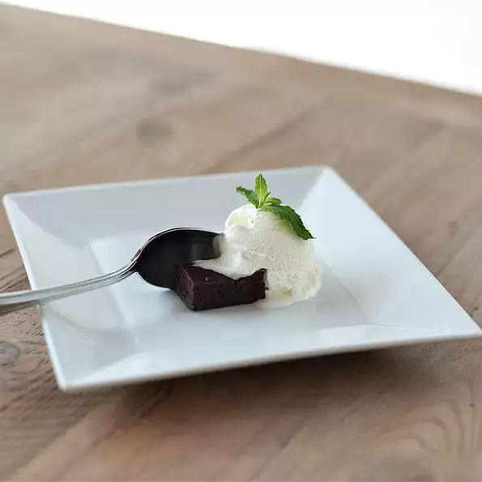

Vanilla Ice Cream

Great, simple, classic vanilla ice cream!
No-cook, no eggs, made with half-and-half and cream. This is designed for
an old-fashioned ice cream maker that yields 1 gallon; be sure to scale recipe
down if you have a countertop model.
Ingredients
- 2 quarts half-and-half cream
- ½ pint heavy cream
- 1½ cups white sugar
- 4 teaspoons vanilla extract
- 1 pinch salt
Steps
- Combine half-and-half, cream, sugar, vanilla and salt in freezer container
of ice cream maker. Freeze according to manufacturer's instructions.
Nutrition Facts
Per Serving:
- Calories=142
- Protein=1.9g
- Carbohydrates=12.2g
- Fat=9.7g
- Cholesterol=32.4mg
- Sodium=27.5mg